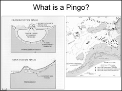
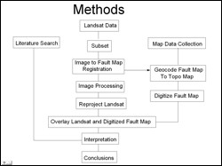
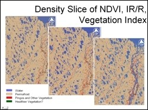

 The north slope of Alaska is a permafrost region, littered with ice-cored mounds called pingos. Pingos are round or oblong structures created by hydrostatic pressures that force the ice and overlying sediments up (Davis, 2001). The objective of this study was to digitally enhance Landsat ETM image of parts of a part of the north slope of Alaska to identify and map pingos. Another objective of the study was to study the spatial relationship between pingo distribution and the Eileen fault zone, running across the study area.
 The first critical step in the study involved extracting Landsat subset of the area of interest and bringing the image and the available structural map of the study area to a common projection system. This was important to see the spatial relation between the fault zone and the pingo distribution pattern. The second important step was to carefully analyze the different spectral bands of the Landsat image to characterize the spectral signatures of the pingos.
 Analysis of individual spectral bands, various color composites, ratio images and principal component images was carried out in order to detect pingos. As the pingos show a characteristically different land cover than the surrounding vegetation, a density sliced color coded IR/R image proved to be the most suitable for identifying them. However, there were 'false alarms' where regions with no pingos also showed spectral signatures similar to pingo areas. To narrow down and refine pingo mapping it is recommended to combine processed visible and infrared remote sensing images with backscatter from SAR data and with high resolution DEMs to uniquely map Arctic pingos.